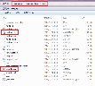
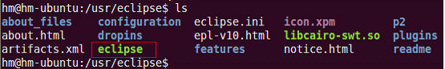
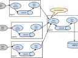

- 大神们给讲讲win7+eclipse+ubuntu 环境下mapreduce?求助
- sqoop导入数据到hbase错误, 权限不足问题
- hadoop2.5发布: 最新编译 32位、64位安装、源码包、Eclipse插件、API以及新特性
- 在Ubuntu中使用eclipse连接HDFS配置开发环境及出现问题解决方案
- Win7 Eclipse调试Centos Hadoop2.2-Mapreduce出现问题解决方案
- Hadoop2.3.0+Hbase0.96.1.1+Hive0.14.0+Zookeeper3.4.6+Sqoop1.99.3安装配置流程
- 大数据云计算20文档、资料、手册下载
- Flume+Kafka+Strom基于分布式环境的结合使用
- 通过cloudera-manager来安装hadoop
- Hadoop2.4.1 + ZK + HBase 环境搭建
- ▪ 如何创建hadoop工程,查看hadoop源码
- ▪ hadoop 完全分布式 下 datanode无法启动解决方法
- ▪ Win7中使用Eclipse连接虚拟机中的Ubuntu中的Hadoop2.4经验总结
- ▪ 请问这样创建的hdfs文件夹在hdfs中怎么看不到呢
- ▪ CDH4-Hadoop_Hive_HBase安装及hadoop2.0.0-CDH4.2.0系列手工安装指南文档下载
- ▪ 基于 Hadoop 建立云计算系统
- ▪ hive实战经验:遇到问题总结
- ▪ BI的OLAP实施查询有相应比较好的方案吗
- ▪ hadoop的mapreduce作业中经常出现的Out Of Memory解决方案
- ▪ 新手指导: hadoop-搭建集群必备知识: 集群及内存配置介绍
- ▪ storm、spark 到底有啥本质区别
- ▪ hadoop如何分发本地的jar文件
- ▪ Hadoop2.4.0 Eclipse插件制作及问题记录
- ▪ Hadoop必看1-1: CentOS 6.4 Hadoop-2.2.0集群安装配置实践
- ▪ hadoop源码分析汇总及文档下载
- ▪ master的日志org.apache.hadoop.ipc.Client: Retrying connect to server